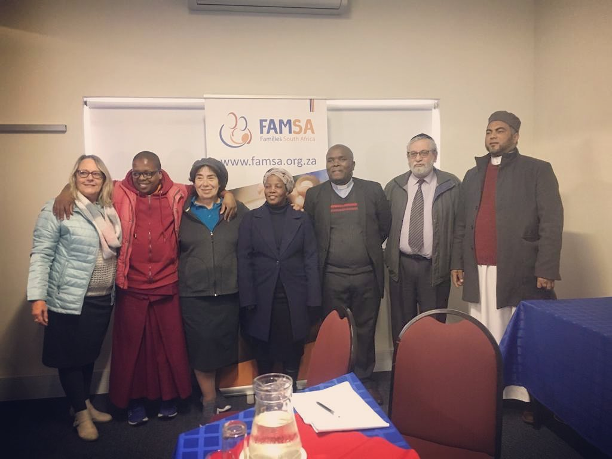
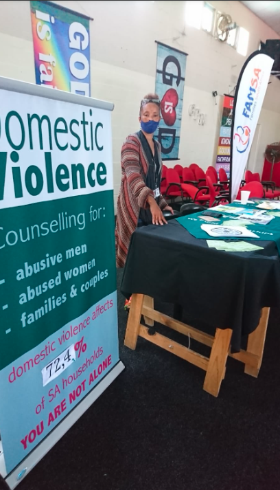
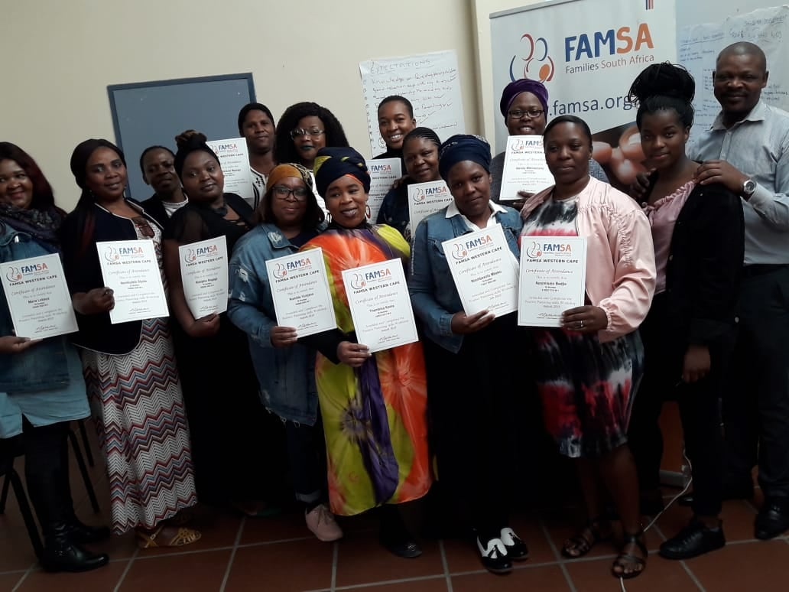
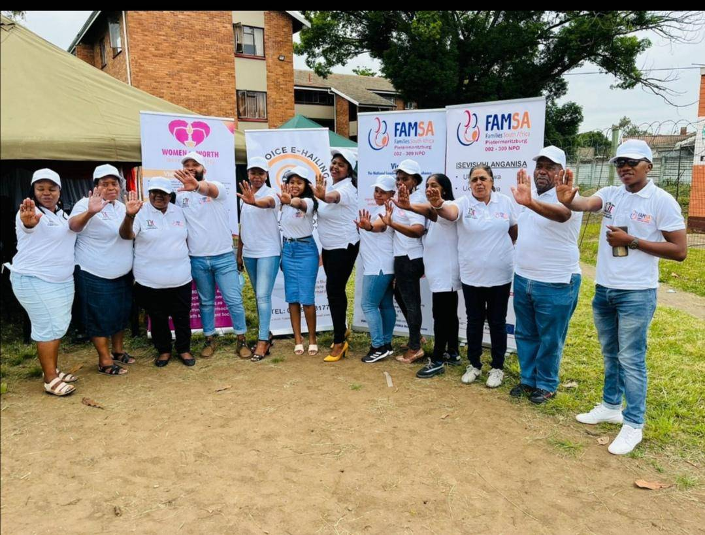
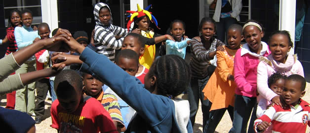

FAMSA Western Cape is a non-profit organisation (NPO) specialising in relationship counselling. We believe that
“healthy families create healthy communities” and are the foundation of our society. Secure families provide a
environment where family members can develop to their full potential, develop positive identities and form a set
of values that serve as a frame of reference for life.Families come in many forms including: extended families,
single parent families, gay couples (with or without children),nuclear families, child headed families, childless
couples, cohabiting couples and combined families. FAMSA recognises all forms of family and strives to make a positive
impact in our communities through our counselling and support services.
Counselling is offered by trained relationship professionals.It's for people who want to make life changes.
The counsellor encourages personal responsibility - if you want to have a loving family and couple relationship,
you need to be prepared to make the changes in your own behaviour first to bring this about.A positive attitude
can enhance possible changes in the relationship.Change can only take place in small steps.Counselling is not an
instant cure, but takes some time.
 The multifaceted challenges we face in South African communities, needs more than a simple quick fix.
To drive real transformation, we need a multi-layered approach with many role-players. The surface-level
problems families encounter daily, stretch from lack of sufficient services to addre ss mental illness,
disabilities, violence in the community and in the home (Gender Based Violence), criminal behaviour, unemployment, homelessness,
addictions, chronic disease and isolation.
 KHAYELITSHA OFFICE
49 Ntsikizi Street, Ilitha Park
Tel: +27 21 361 9098
Fax: +27 21 364 0231
E-mail: khayelitsha@famsawc.org.za
visit fromhttps://www.famsawc.org.za/